Programas e Projetos Sociais
Foco: Esporte, cultura, saúde e comunidade.
Esportes: Taekwondo e Zumba.
Cultura e oficinas: Música, Culinária, Marcenaria e Costura Criativa.
Sustentabilidade: Horta comunitária e feira local.
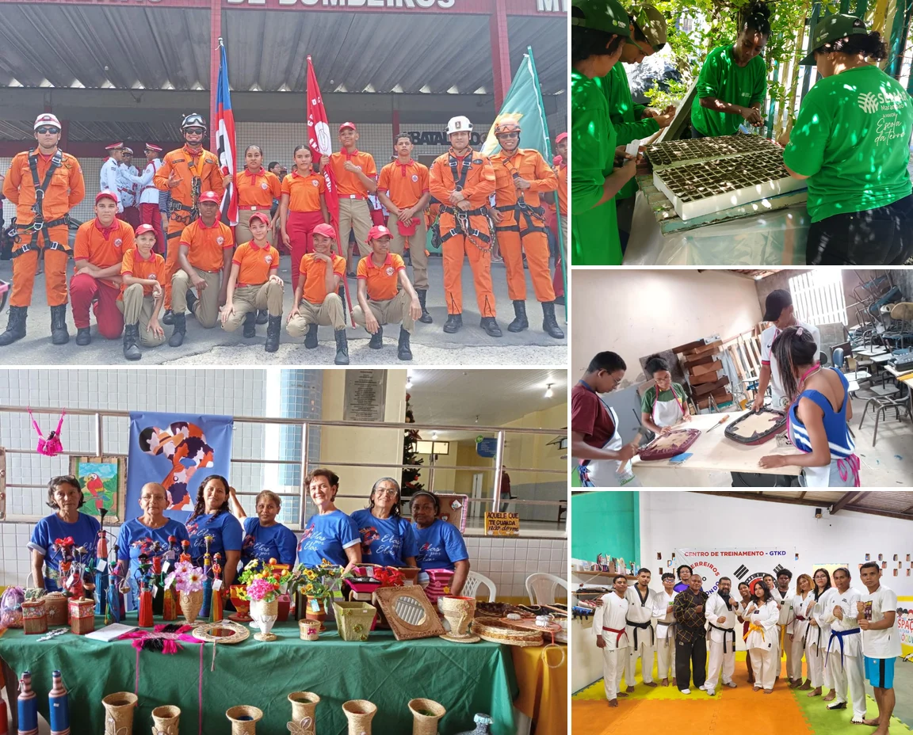
Há mais de 50 anos, o Grêmio Cultural e Recreativo Anjo da Guarda contribui para a formação e o desenvolvimento comunitário na região Itaqui-Bacanga. Conectamos educação infantil, cultura, arte, esporte, assistência social e formação profissional. Nossa missão é criar oportunidades reais para crianças, jovens, adultos e idosos crescerem com dignidade e alegria.
Sobre nós
Somos uma Organização da Sociedade Civil, fundada em 1975, com 51 anos de atuação na região Itaqui-Bacanga, no bairro do Anjo da Guarda, em São Luís. Somos referência em educação comunitária e desenvolvimento social, atuando nas áreas de educação, cultura, assistência social e formação profissional. Acreditamos no poder da educação, da arte, do esporte e da convivência comunitária para transformar vidas.
Foco: Esporte, cultura, saúde e comunidade.
Esportes: Taekwondo e Zumba.
Cultura e oficinas: Música, Culinária, Marcenaria e Costura Criativa.
Sustentabilidade: Horta comunitária e feira local.
Foco: Formação escolar integral para crianças.
Ensino: Educação Infantil com olhar humanizado.
Reforço escolar: Apoio para crianças e adolescentes.
Estrutura: Ambientes seguros e acolhedores.
Nossa identidade
Contribuir para o desenvolvimento sustentável da comunidade, promovendo a educação, a saúde e o protagonismo, por meio de programas e projetos que visam a melhoria da qualidade de vida e a construção de uma sociedade mais justa e igualitária.
Ser reconhecida como uma força catalisadora no desenvolvimento sustentável da comunidade, deixando um legado duradouro de educação e saúde que transforme vidas e promova uma sociedade mais justa e igualitária.
Nossa história
Nossa Semente: Nossa instituição foi fundada com o propósito de promover a integração, cultura, esporte e apoio social aos moradores da área Itaqui-Bacanga.
Educação que Transforma: Ampliação da nossa atuação com a abertura da Escola Pinóquio, oferecendo ensino infantil e fundamental de qualidade visando um futuro promissor às crianças da região.
Além da Sala de Aula: Início formal dos projetos integrados de esporte, artes e capacitação. A instituição passa a atender jovens, adultos e idosos.
Voz e Sustentabilidade: Conquista de assento nos conselhos de direitos e consolidação das primeiras grandes parcerias com empresas privadas e incentivos fiscais para ampliar o impacto dos projetos.
Meio Século de Legado: Celebração de 50 anos de dedicação comunitária, marcada por premiações, certificações de transparência e reconhecimento como uma das principais instituições de transformação social atuando na Região.
Reconhecimento
Certificação de Entidade Beneficente de Assistência Social.
Reconhecimento da Rede Gerando Falcões — 2024 e 2025.
Rede Maranhense de Diálogos Sobre Drogas, categoria Prevenção — 2025.
Agenda 2030
Nosso propósito de existência está conectado aos Objetivos de Desenvolvimento Sustentável da ONU, através de nossas ações, projetos e parcerias.
Rede de colaboração
Acreditamos que a transformação social acontece por meio da união de esforços. Conheça as organizações que caminham conosco.
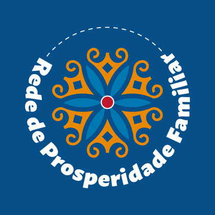
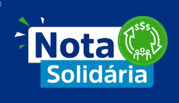
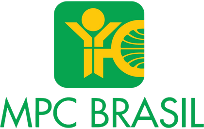
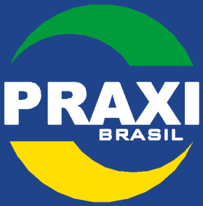
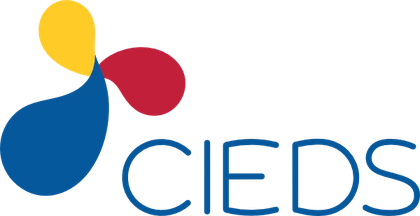
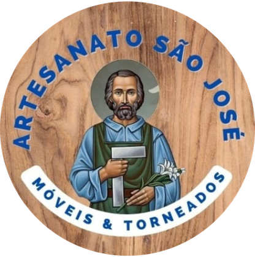
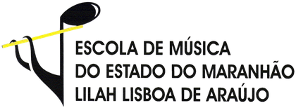
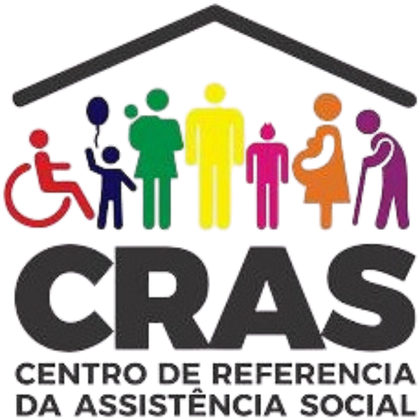
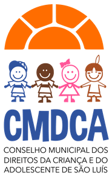
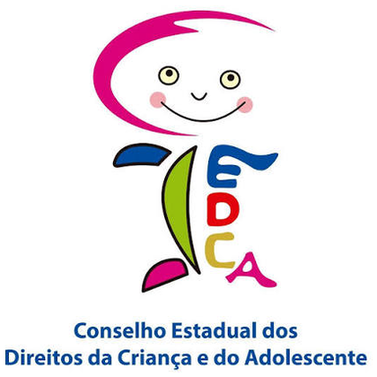
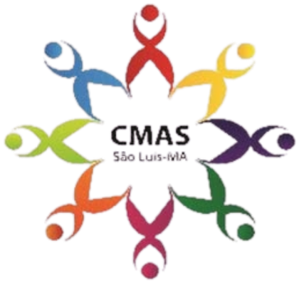
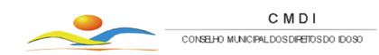
Quer apoiar nossos projetos? Seja nosso parceiro.
Torne-se um contribuinte ou parceiroNossa atuação
Iniciativas que promovem desenvolvimento, convivência, saúde, cultura e oportunidades.
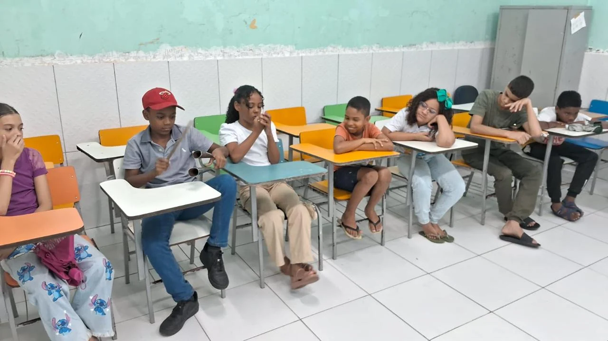
Apoio à aprendizagem de crianças e adolescentes.
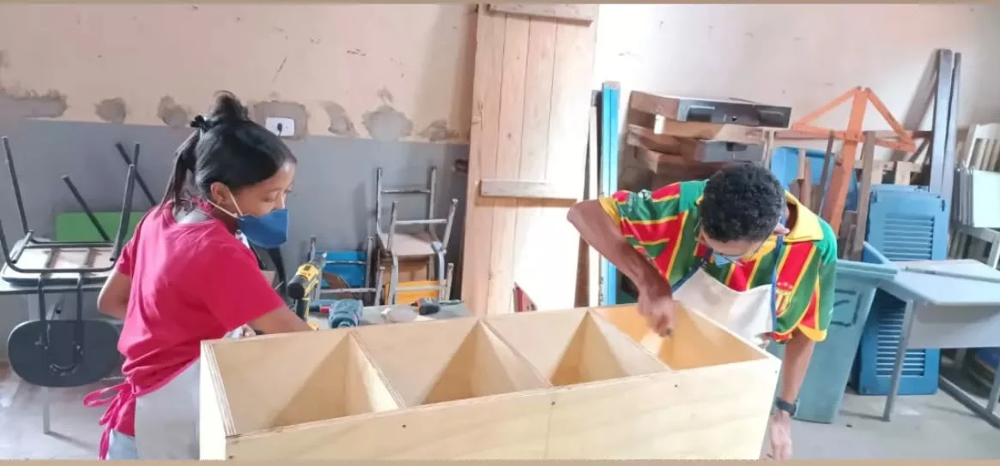
Oficinas de expressão artística, criatividade e habilidades manuais. Assista à apresentação do projeto de Marcenaria.
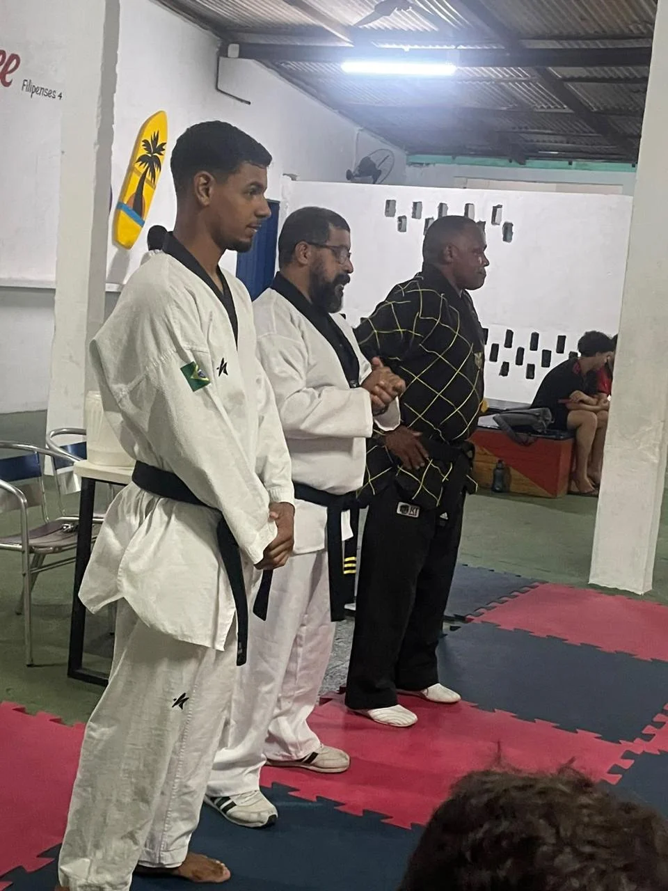
Esporte, disciplina, respeito e desenvolvimento físico.
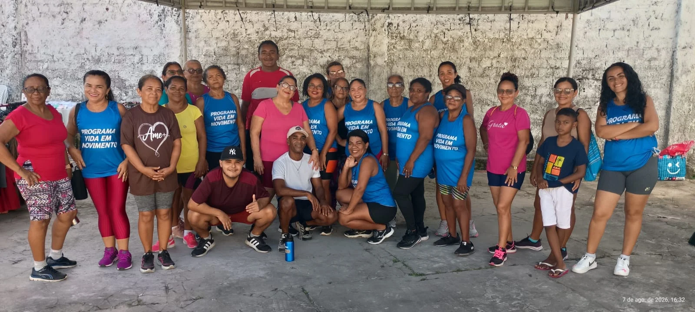
Movimento, saúde e integração.
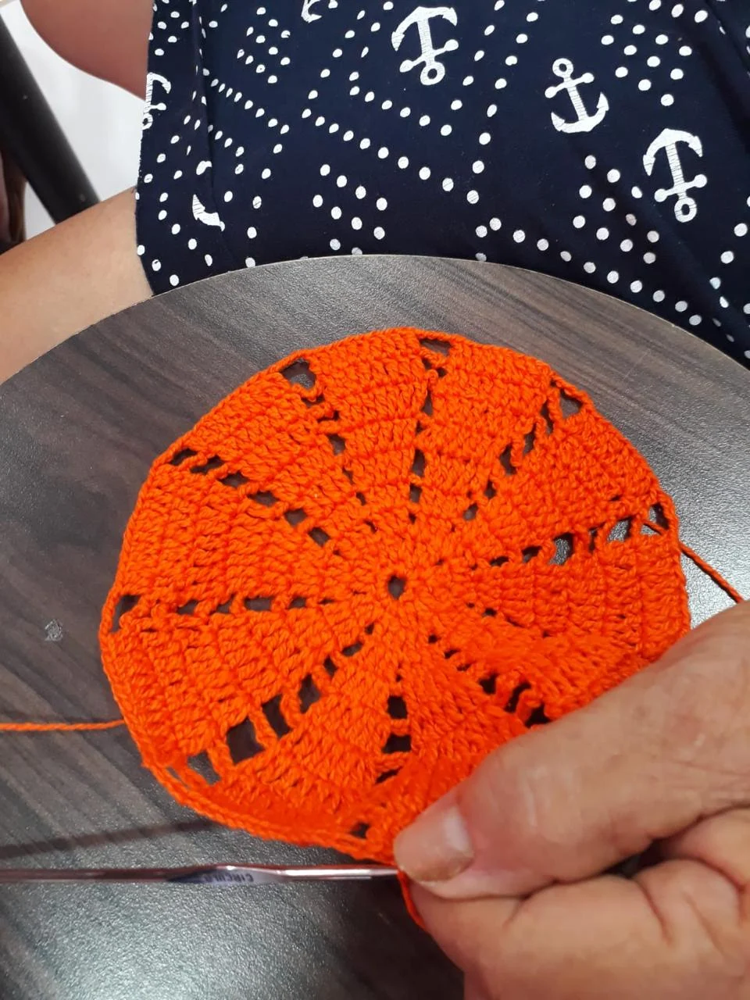
Aprendizagem de técnicas e desenvolvimento de habilidades.
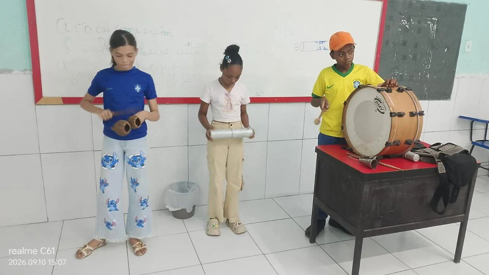
Oficinas de Musica estimulando a criatividade, a expressão artística e o trabalho em equipe por meio de atividades práticas e dinâmicas.
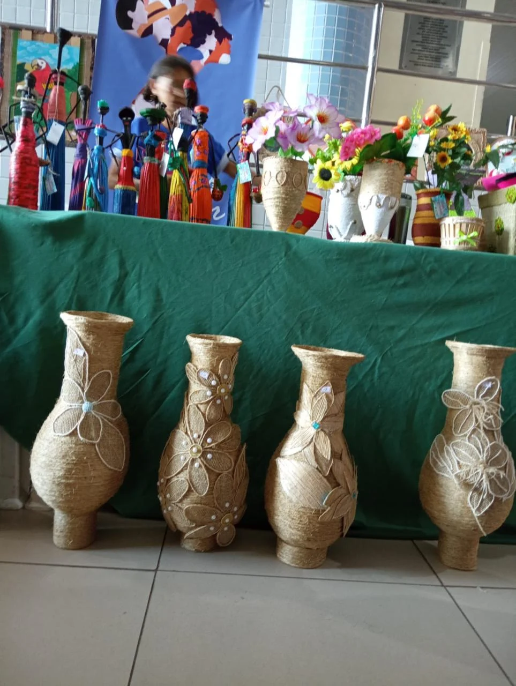
A oficina de artesanato é o espaço onde se aprende e pratica essas técnicas, produzindo peças únicas, preservando a cultura e gerando renda
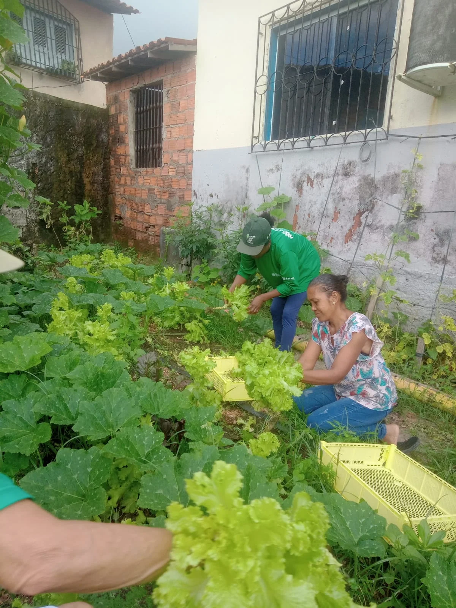
Produção sustentável, alimentação e cuidado com a terra.
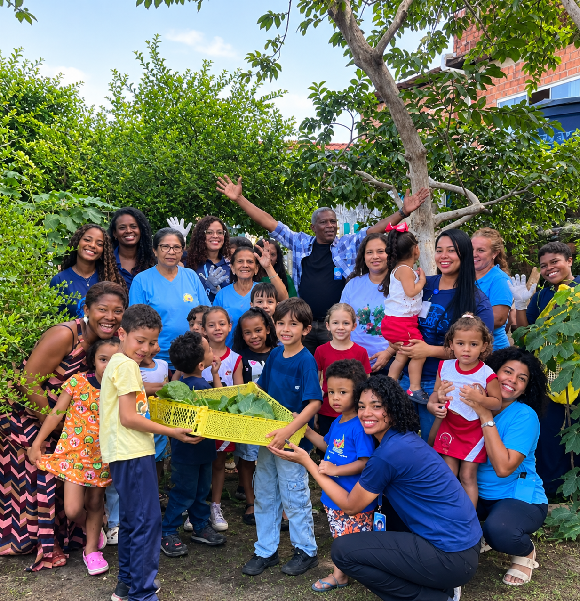
Quintais produtivos e segurança alimentar das famílias.
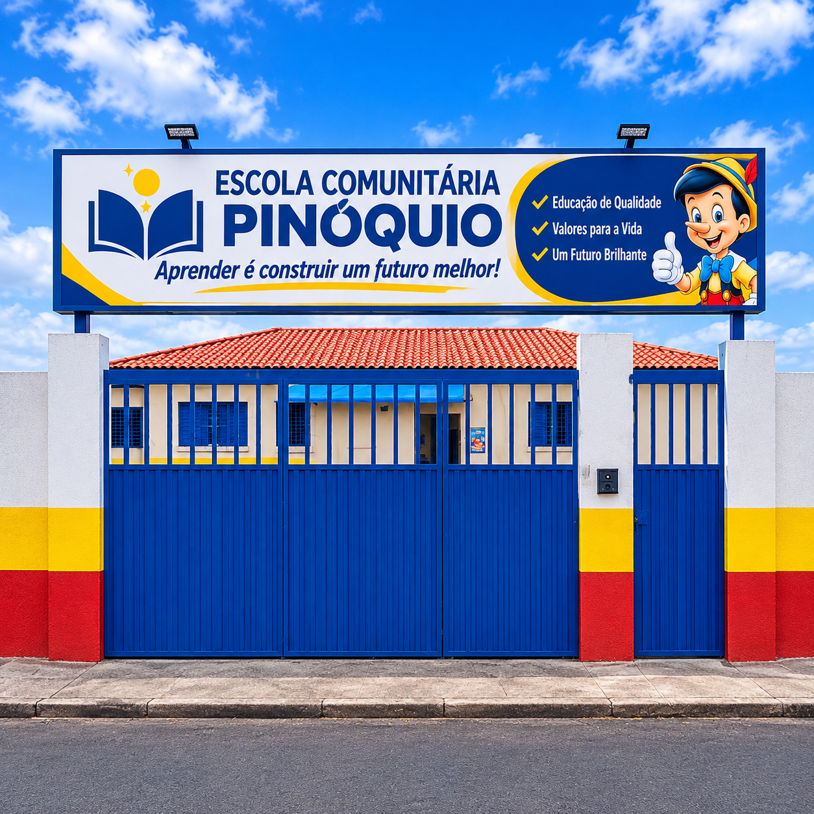
Nossa escola
Da Creche ao Infantil II, atendemos em média 100 crianças. Oferecemos um ambiente acolhedor onde seu filho desenvolve habilidades sociais essenciais e alcança a alfabetização completa com carinho, segurança e excelência.
Conheça a nossa escolaGaleria de fotos da escola: abrir pasta de fotos.
Acesso à informação
Consulte documentos, registros e informações institucionais.
Balanços financeiros e demonstrativos.
Relatórios das ações e resultados institucionais.
Estatuto, Ata da Eleição e Organograma.
Registros sociais e participação em conselhos.
Programa de Voluntariado
O Grêmio Cultural e Recreativo Anjo da Guarda está com as portas abertas para pessoas como você, que querem fazer a diferença e transformar vidas! Venha fazer parte do nosso Programa de Voluntariado e coloque seus talentos e sua vontade de ajudar a serviço de uma causa maior.
Transforme, inspire, compartilhe. Seja voluntário(a) e ajude a construir um futuro mais justo e solidário. Entre em contato e saiba como participar!
Quero ser voluntário(a)Fale conosco
Estamos no bairro Anjo da Guarda, em São Luís — MA.
Como chegar